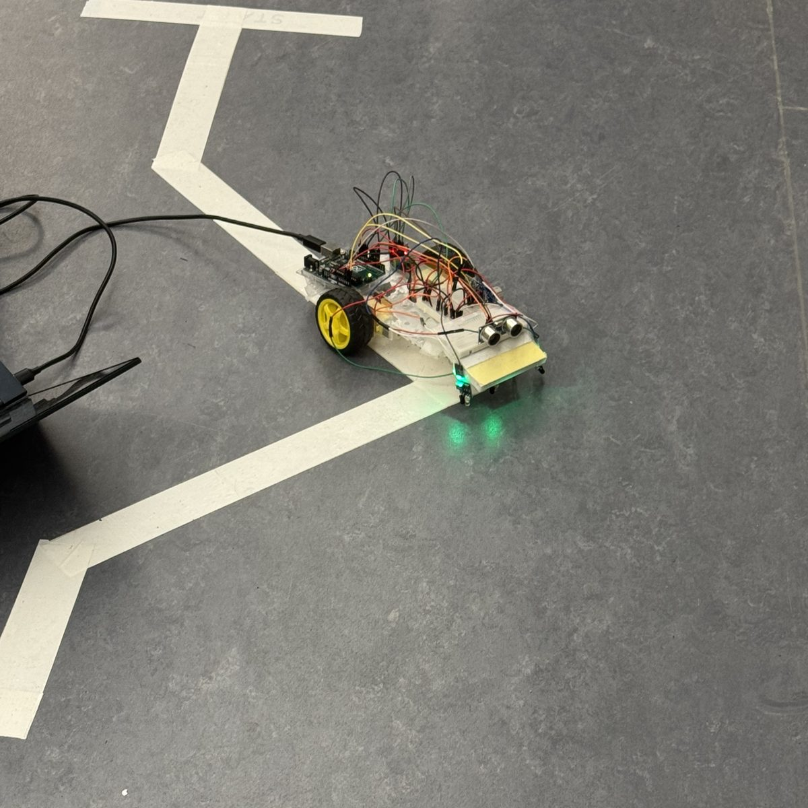

Code, build, test, fix
On a team of three I didn't own one piece. I moved between whatever was blocking us.
What's on board
A 3D model I rebuilt from our photos and videos. Drag to turn it, and tap a part to find it.

Drag to rotateSense, compare, decide, act. Repeat.
The robot runs the same short loop many times a second. No one steers it; it corrects itself from what its sensors report.
- 1SENSE
Read the sensors
The right IR sensor sees the white tape.
- 2COMPARE
Check the rules
Right reading is above the threshold, left is below: the line has slipped to the right.
- 3DECIDE
Pick a move
Turn right to get centered over the line again.
- 4ACT
Drive the motors
The right wheel slows, the left keeps going, and the robot curves right.
This is called feedback control: every move is corrected by the next reading.
Shadows looked like the floor
We started with photocells, which read how bright the floor is. Above the threshold means "white line", below means "floor". That works until a shadow falls on the line. Then the white tape reads as dark, the robot stops seeing the line it's supposed to follow, and drives straight off it.
Watch the photocell robot drive into the shadow. Then switch to the IR sensors and try again.
A sensor that brings its own light
We couldn't control the room's lighting, so we stopped depending on it. I suggested replacing the photocells with two IR line sensors. Each one shines its own invisible infrared light at the floor and measures how much bounces back: white tape reflects a lot, the dark floor very little.
Because the sensors light the floor themselves, a shadow barely changes what they see. White still reads as white. (The green glow in the photo is just an indicator light; infrared is invisible.)
Code that works on paper still has to survive the real room.
Our biggest problem wasn't in the code at all. It was the lighting, something you can't spot by reading code. Only testing in the real space showed it. Now I look for the real-world conditions a system depends on before trusting it.